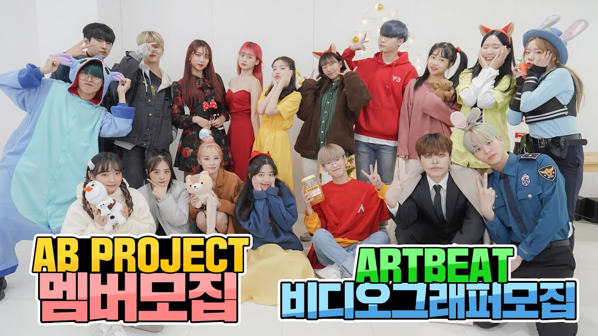

A YouTube channel that uploads cover videos of K-POP choreography around Daegu Metropolitan City. It consists of a YouTube channel called ARTBEAT and AB PROJECT, ARTBEAT's dance crew. Many of the members are also active as YouTubers.
As of January 18, 2021, the YouTube channel ARTBEAT had 3.14 million subscribers, ranking 98th among Korean YouTube channels.
At first, I chose members informally. Since then, members have been applied through recruitment videos irregularly, but from May 2019 to June 16, 2019, members have been selected through regular auditions. There has been no announcement for members since the recruitment through the recruitment video on January 10, 2020.